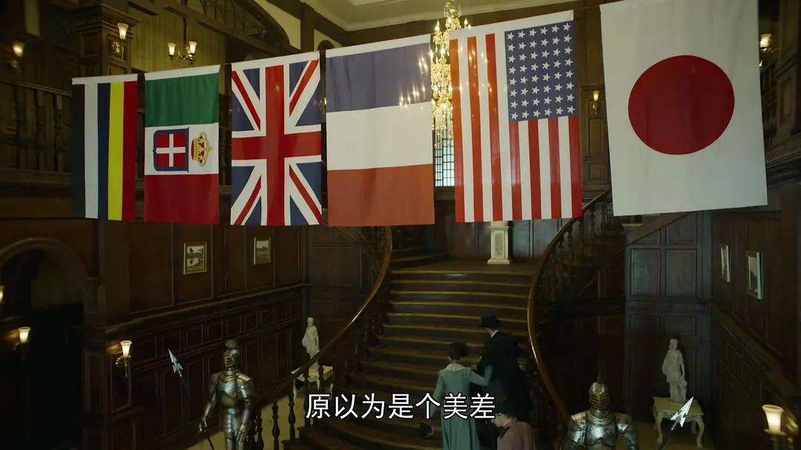
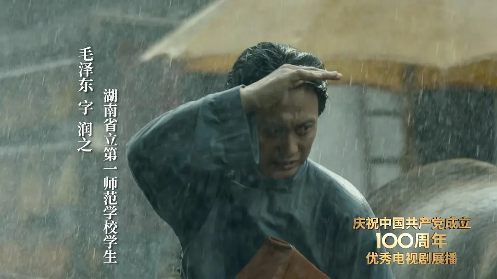
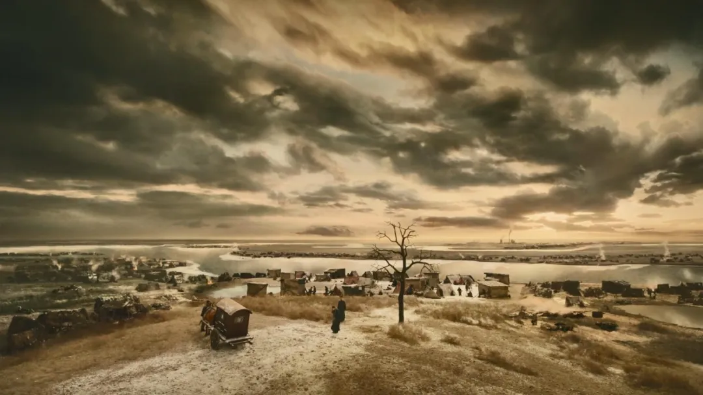
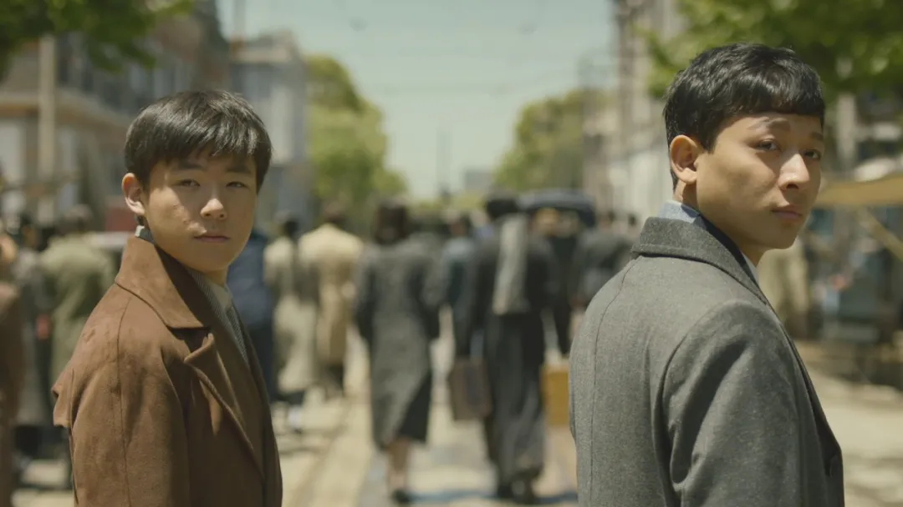

《觉醒年代》：为何看得这么爽
作者：地瓜 - 豆瓣
引言
2021年是建党100周年，所以相关历史主旋律题材是少不了的。这其中，我最期待的两部剧，一文一武——《觉醒年代》《人生若如初见》。
这种剧最重要的其实是编剧。《觉醒年代》编剧龙平平，中国中共文献研究会理事，编剧代表作《历史转折中的邓小平》；《人生若如初见》编剧江奇涛，编剧代表作《人间正道是沧桑》。都是如雷贯耳的作品。今天就只说《觉醒年代》吧。这个剧43集，2021年3月19日刚完结。
《觉醒年代》，给我的感觉就一个字：“爽”。
为什么，一部历史主旋律题材剧，一部讲述1915-1921年从新文化运动到中国共产党成立的纯文戏的剧，一部从头到尾基本都是一群文人演讲、开会、讨论、吵架、骂街的剧，也能这么爽？爽在哪？
首先爽在三重理性，涉及历史的逻辑、历史的细节、历史的人物。总的来说，这部关于历史的剧，爽就爽在基调是很理性的，甚至有着直逼学术的严谨。先举一个微小的例子爽一爽：这部剧能做到1919年巴黎和会上挂着的六面国旗都符合史实。

可别以为这很简单。正如B站UP主“史图馆”和“天恶之”所考证的，六面国旗中很容易被观众忽视的是，法国国旗采用了1976年以前的深蓝三色旗（可以拿现在的浅蓝三色旗去比较一下），美国国旗采用了1912-1959年的48星星条旗，日本国旗采用了1999年以前的10:7日章旗（可以看出比其他国旗要宽）；而且，英国国旗不是一个轴对称图像，而是一个中心对称图像，靠近旗杆的两条红白双色十字斜条中的上部主要应为白色，剧中也挂对了。当然，这些百度的话都能百度到，不过有多少创作者愿意花这个时间呢？
而剧集也不是以一种冰冷的或是不近人情的态度去讲历史。它引导你去感受历史的温度。那段历史是绝望彻骨的、是激情澎湃的、甚至是幽默活泼的。能密集地感受这样丰富饱满的情感，又是一种爽。
接下来我们就把历史的逻辑、细节、人物与温度，分为四部分，展开详细说说吧。
一、逻辑清晰、史料扎实
可能一说到主旋律题材，有人就反应成歌功颂德。不能不说有一些作品确实是这么干的；但真正的主旋律——不管哪国的——最重要的是逻辑。因为主旋律的目的在于阐述某一思想（也就是主旋律思想）的正确性，尤其是要说服那些还不了解、甚至是反对这一思想的人，这种时候不用逻辑怎么可以呢？光歌功颂德是不可以的，至少要像好莱坞一样编一个逻辑自洽的故事作论据。
那么现在说《觉醒年代》，它的目的在于阐述为什么中国历史选择了马克思主义。这个论据不用编，现成的，就是历史上真实发生过的新文化运动。但是新文化运动千头万绪，还是需要逻辑来组织。
《觉醒年代》的故事开始于1915年。这一年，中华民国大总统袁世凯，迫不得已与日本签订了丧权辱国的《中日民四条约》（“二十一条”修正案）。中国知识分子陷入了痛苦和迷茫：说好的共和能救中国呢？到底什么能救中国呢？
有人认为，共和政体已成，封建思想未去。由此，引出新文化运动的起点——1915年陈独秀创办《青年杂志》（后改名《新青年》）。
此后，编剧研究文献的功底就显露出来了，这个剧在组织情节时就像在做文献综述，采用了一种纵横结合式写法：“纵”即纵向按时间顺序写新文化运动的发展，“横”即横向比较新文化运动中的各种思潮流派。这其中的代表人物，还有他们的代表性言论，都有所展现。比如陈独秀《敬告青年》、蔡元培《就任北京大学校长之演说》，鲁迅《狂人日记》、李大钊《青春》《庶民的胜利》，各种语文、历史课本中的经典“台词”，都以近乎原文的形式出现，演员朗诵时声情并茂，令人血脉喷张。
另外，本剧虽讲文化史，但也重点选取了与新文化运动联系紧密的一些重大历史事件进行表现，如“二十一条”、张勋复辟、十月革命、一战结束、五四运动。这些事件要么推动了新文化运动进入新阶段，要么是受到新文化运动的启发而产生。这样，全剧以新文化运动为主线，结合时事，通过其他主义的陆续失败，一步一步论证了为什么中国历史选择了马克思主义。
其实无论是高中历史、还是大学的近现代史纲要，都讲过这段历史，但是高度概括、高度抽象；民国北洋时代的历史又一直以你方唱罢我登场的混乱著称。这些都导致这段历史的面目很模糊。
而《觉醒年代》点线面结合，把这段历史讲得一气呵成，着实让人有一种掌握知识点的爽感。
二、厚重写实、灵动写意
有了逻辑、有了史料，从表达观点的角度说就够了；但对电视剧来说还不够，因为电视剧不是论文，不能只做一下文献综述就拉倒了。有了骨架，还要有血肉，要让观众进入历史，设身处地，这样才能更容易领会剧集所表达的观点。
让观众进入历史的最佳方法就是填充历史的细节，剧集实现这一点的方式是写实与写意相结合。
首先是写实地描绘了这一时期的中国各阶层，例如在毛泽东登场时，给了一个他冒雨跑过长沙的街巷的长镜头，颇有“遍地哀鸿满城血,无非一念救苍生”的意境——观众跟随他的视角，看到了长沙城内各个阶级，以及富人、穷人两个世界。世道艰难，一目了然。

再比如为鲁迅登场起铺垫作用的场景，正是由他小说《示众》《阿Q正传》中看客围观刑罚的场景，以及《药》中愚民买人血馒头的场景结合起来的。
鲁迅登场时正在看碑文，紧接着就是与钱玄同的“铁屋子”论辩，这些都记载在《呐喊·自序》中。
但这写仅仅是为了写实而拍吗？当然不是，拍这些也是为了写意，展现那个年代的社会不公与民众愚昧。
剧集的其他细节性隐喻非常多。
比如，北京城里的车轮艰难地在不合适的沟中东倒西歪地行进，暗示中国走了不合适的路。
袁世凯的府邸中黑云压城、白天打灯，暗示他已穷途末路。
给到老百姓的镜头，常混杂着牛、鱼、猴、鸭，而且是特写，暗示民智未开。
而给到先进知识分子的镜头，又搭配向上爬的蚂蚁、走出井底的青蛙、舞刀弄枪的螳螂、振翅高飞的白鸽等特写，暗示革命者力量虽小但前途无量。
这些都只是我记得的一部分细节而已，如果用心观察，还能发现更多。仅鲁迅登场这几分钟，我能看出来的，就化用了关于他的四个文学、历史典故。对于不喜欢水剧情的人来说，信息量密集也是特别爽的。
三、大江淘尽，风流人物
最后说到历史人物了，这是剧集的核心。剧集在历史人物的塑造方面有三个优点。
一是对历史人物英雄的一面，和凡人的一面的把握都非常到位。
有些主旋律，过于侧重“英雄”，使得说教意味太浓；有些主旋律商业片，过于侧重“凡人”，使得理想主义太弱。稍微好一点的作品，浓墨重彩“英雄”的一面，穿插些许“凡人”的一面，但实际上搞得像是两个人。
为什么一个历史人物不可以既是英雄，也是凡人呢？
剧集又是怎样做到让一个历史人物既是英雄，也是凡人呢？最重要的是将人物的英雄行为与凡人行为，统一于一个性格与价值观框架。
例如陈独秀，他的性格刚烈不羁，在成为马克思主义者前是激进的资产阶级民主主义者。这决定了在文化上、政治上他与封建主义者进行激烈的争斗，这是他英雄的一面；刚烈不羁，换句话说就是脾气暴躁，再加上他常年斗争不顾家，所以他还要与自己的两个孩子“斗”，这是他凡人的一面。
二是注重人物的复杂性。
还是陈独秀，他又有温情脉脉的一面。平日里他对孩子严格要求，时不时还大吼大叫，但暗地里欣慰他们的成长。在两个孩子将远行时，还特意亲手给他们炒花生。
又如辜鸿铭，既是顽固的文化复古派，又是坚决的文化守护者。
三是揭示人物终究是属于历史的。
剧集有两条很重要的人物主线：一是陈独秀、陈延年、陈乔年父子三人在亲情上、政治上从隔阂到和解；二是陈独秀、李大钊、胡适三人从文化上志同道合，到政治上分道扬镳。
剧集安排了许多意味深长的台词，暗示了他们的命运。
陈独秀一大家子在一起时，陈延年在批评陈独秀的暴躁时说：“性格决定命运。”后来陈延年又自述：“我是立志要为国家献身的。”后来当这一家逐渐形成一个亲情上、政治上的统一体时，观众已经知道他们将迎来更加残酷的命运。所以这一刻被渲染得越美好，也就越残酷。
陈独秀、李大钊与胡适在一起痛饮，此时嫌隙已生。酒后，陈独秀在家门口的水洼里铺上砖头，对喝醉的胡适说：“前路坎坷，小心脚下。”胡适醉醺醺地答道：“我走了。我自己走。”观众知道，后来胡适不仅失去了陈李挚友，而且还失去了国共支持，成了真正的孤家寡人。
历史人物最终逃不脱历史，这是他们的宿命。
大江东去，浪淘尽，千古风流人物。感受历史沧桑，也是一种爽。
四、天若有情天亦老
历史的温度——我这里说的历史的温度是指什么呢？是在经历了前面三重理性的思考之后，突然抛去这些，回归到最原始的状态，然后从历史中能最直接感受到的东西。
我能感受到绝望彻骨。
故事始于二次革命失败，袁世凯窃取胜利，革命者流亡海外；“二十一条”的出现，使中国有亡国灭种的危险；张勋12天的复辟，上演了一出可恨又可笑的闹剧；中国成为一战战胜国，转眼间就被端上列强谈判桌任人宰割。
中国老百姓愚昧无知、麻木不仁，平日里最大的爱好是抽大烟、看杀头。中国知识分子绝望，陈独秀流亡日本，说这个国家无药可救；鲁迅每天沉默地抄碑文，说与其唤醒大家，不如让他们在熟睡中没有悲哀地死去。
绝望的高潮是，1920年2月，为躲避北洋当局迫害，李大钊护送陈独秀秘密离开北京。时值隆冬，他们路过天津海河，看到沿岸饥民遍野，天地为之色变。陈独秀伏地大哭，李大钊无声落泪，连拉车的马儿似乎也读懂他们的心意。建党的念头在这一刻发芽，配上阿鲲创作的由哀婉沉重、到裂变觉醒、到心意已决、到怒而奋起的主题曲，构成了全剧最震撼的段落。

但绝望，也催生决心、催生激情。
我能感受到激情澎湃。
新旧文化两派在北大唇枪舌剑，演讲者不是博得满堂喝彩就是被扔一身垃圾；李大钊在一战结束后聚众高呼“庶民的胜利”，向工人们热烈地宣传社会主义；陈独秀目睹五四运动期间军警大肆抓捕进步学生，终于放弃幻想准备斗争；全国发动罢课、罢工、罢市的“三罢”，五四洪流终于震撼了北洋政府。
但这激情不是只用于斗争。亲情、爱情、友情，无一不令人感动。陈独秀与蔡元培在北京相遇热情拥抱，异国画手偶然间画下了这一幕，这既为画面增添了生活趣味，又暗示这将是永留史册的历史性一幕。
激情也永远不会消退，即使是在刑场上的那一刻。陈延年、陈乔年出国时，用蒙太奇以及双重曝光手法穿插了他们数年后在刑场上的场景，表现他们的初心未改（我哭了，你呢）。
我还能感受到幽默活泼。
李大钊把工资送给了贫困学生，只能哄孩子吃肉有诸多坏处；结果蔡元培送来工资，他又立刻变脸带孩子去吃肉了。
北京大学的进步学生们，正是他们最好的年纪，他们也喜欢打闹、画画、音乐、电影。
旧文人迂腐但又有点原则的样子，让人好笑胜过让人生气。“新文化”三人组为了拉拢辜鸿铭协助对付英国人，不迭地给他溜须拍马戴高帽，堪称全剧最搞笑段落。
即便是那些最反动的反动派，也经常要么被进步人士怼得哑口无言，要么被人民运动吓得瑟瑟发抖，要么互相抱怨互相甩锅，在滑稽的配乐中出尽洋相。其中吴炳湘是反派第一搞笑担当。
用激情与幽默面对绝望，这是一种饱含着昂扬的革命乐观主义精神的叙事语气，也再现了当年革命者的气概。革命是非常艰苦，敌人是非常可怕——但若敌人那层可怕的伪装被激情刺穿，被幽默剥去，他们的一切看上去的威严、睿智、强悍，也就跟着一扫而空。他们像是被踩进泥土里的佛像，再也叫人怕不起来了。
结语
说了这么多，无非是想表达，这么一部非常严肃的历史主旋律题材，其实既有知识，又很通俗。它通俗到你可以把它视作是一群青年人在睿智导师引领下激情创业的爽文，时不时还有一些重磅人物来客串。这部剧简直可以像漫威电影宇宙那样搞一个红色宇宙了。按照这个模式来，主旋律优质批量生产或有可能（其实不可能，还得看各剧组的能力和态度，我就口嗨一下）。
最后，再来感受一下剧中人物们的深刻思想、澎湃激情与隽永文笔吧。
地球即成白首，吾人尚在青春，以吾人之青春，柔化地球之白首，虽老犹未老也。 ——1916年《青春》，李大钊
这回战胜的，不是联合国的武力，是世界人类的新精神。不是哪一国的军阀或资本家的政府，是全世界的庶民。我们庆祝，不是为哪一国或哪一国的一部分人庆祝，是为全世界的庶民庆祝。不是为打败德国人庆祝，是为打败世界的军国主义庆祝。 ——1918年《庶民的胜利》，李大钊
倘政府不愿和平，不完全听从市民之希望，我等学生、商人、劳工、军人等，惟有直接行动，以图根本之改造。 ——1919年《北京市民宣言》，陈独秀
时机到了！世界的大潮卷得更急了！洞庭湖的闸门动了，且开了！浩浩荡荡的新思潮业已奔腾澎湃于湘江两岸了！顺他的生，逆他的死。如何承受他？如何传播他？如何研究他？如何施行他？是我们全体湘人最切最要的大问题，即是《湘江》出世最切最要的大任务。 ——1919年《湘江评论》创刊宣言，毛泽东
哪怕是仅仅从剧中引用的这几段文字，我们也清楚地看到，100年前的中国大地上，少数知识分子的觉醒，发展为人民觉醒，一片新的浪潮正在形成，奔向1921年7月那个注定的日子。今日读来，仍然铿锵有力。
